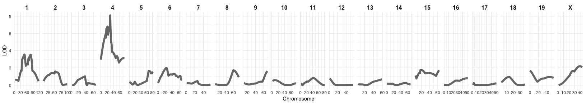
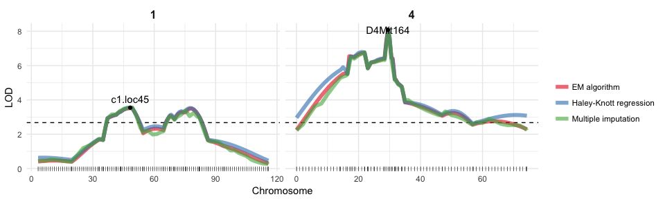
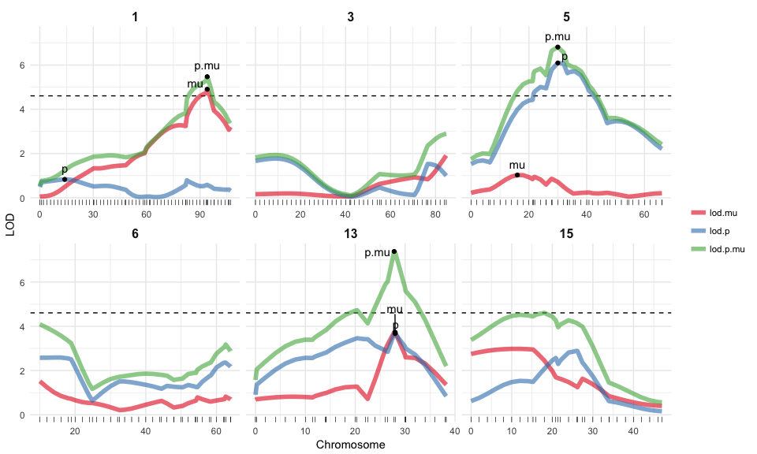
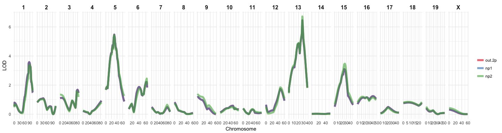
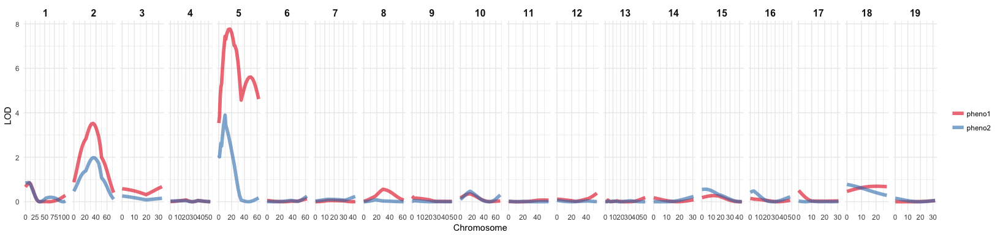
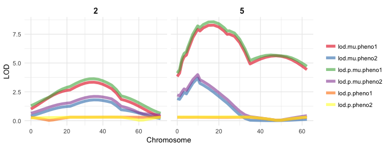
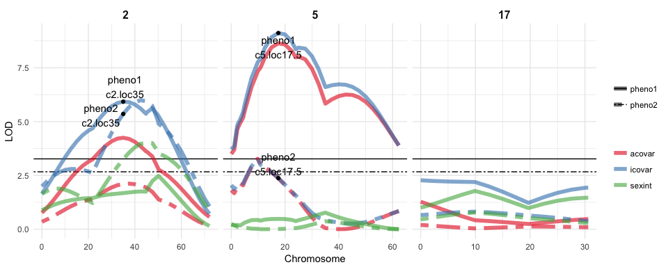
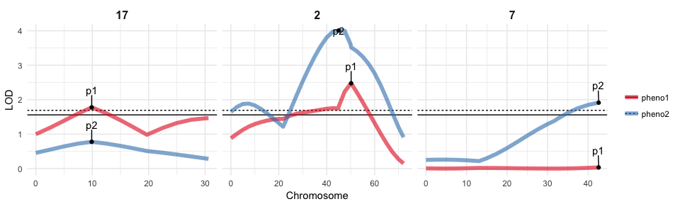
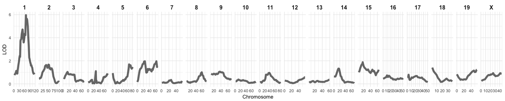
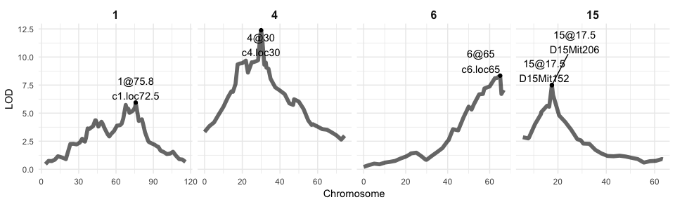

Conditional ggplot2 geoms in functions (QTL plots)
When running an analysis, I am usually combining functions from multiple packages. Most of these packages come with their own plotting functions. And while they are certainly convenient in that they allow me to get a quick glance at the data or the output, they all have their own style. If I want to prepare a report, proposal or a paper though, I want all my plots to come from a single cast so that they give a consistent feel to the story I want to tell with my data.
I have grown very fond of ggplot2 for producing plots, because of it’s tidy grammar, flexibility and easy customization. Here, I want to show an example of my own ggplot2 function to produce QTL plots for Karl Broman’s qtl package.
Specifically, I want to show how to incorporate conditional geoms when using ggplot2 in a function call.
I will show how my function can be used with the output from qtl’s scanone() function by following the examples from the package tutorial. The tutorial does an excellent job describing the workflow, so I am not going to explain it here.
library(qtl)
For defining the function and preparing the data for plotting, I am working with ggplot2, ggrepel (for adding text labels that don’t overlap), tidyr and dplyr. This is my function code:
library(ggplot2)
library(ggrepel)
library(tidyr)
library(dplyr)
qtl_plot <- function(input, # data frame input from scanone
mult.pheno = FALSE, # multiple phenotypes?
model = "normal", # model used in scanone
chrs = NA, # chromosomes to display
lod = NA, # LOD threshold
rug = FALSE, # plot marker positions as rug?
ncol = NA, # number of columns for facetting
labels = NA # optional dataframe to plot QTL labels
) {
# if we have multiple phenotypes and/or a 2part model, gather input
if (mult.pheno & model == "2part") {
input <- gather(input, group, lod, grep("pheno", colnames(input)))
} else if (mult.pheno) {
input <- gather(input, group, lod, grep("pheno", colnames(input)))
} else if (model == "2part") {
input <- gather(input, method, lod, lod.p.mu:lod.mu)
}
# if not all chromosomes should be displayed, subset input
if (!is.na(chrs)[1]) {
input <- input[as.character(input$chr) %in% chrs, ]
}
# if there is more than one LOD column, gather input
if (!any(colnames(input) == "lod")) {
input$lod <- input[, grep("lod", colnames(input))]
}
# if no number of columns for facetting is defined, plot all in one row
if (is.na(ncol)) {
ncol <- length(unique(input$chr))
}
# if labels are set and there is no name column, set from rownames
if (!is.na(labels)[1]) {
if (is.null(labels$name)) {
labels$name <- rownames(labels)
}
}
# plot input data frame position and LOD score
plot <- ggplot(input, aes(x = pos, y = lod)) + {
# if LOD threshold is given, plot as horizontal line
if (!is.na(lod)[1] & length(lod) == 1) geom_hline(yintercept = lod, linetype = "dashed")
} + {
if (!is.na(lod)[1] & length(lod) > 1) geom_hline(data = lod, aes(yintercept = lod, linetype = group))
} + {
# plot rug on bottom, if TRUE
if (rug) geom_rug(size = 0.1, sides = "b")
} + {
# if input has column method but not group, plot line and color by method
if (!is.null(input$method) & is.null(input$group)) geom_line(aes(color = method), size = 2, alpha = 0.6)
} + {
# if input has column group but not method, plot line and color by group
if (!is.null(input$group) & is.null(input$method)) geom_line(aes(color = group), size = 2, alpha = 0.6)
} + {
# if input has columns method and group, plot line and color by method & linetype by group
if (!is.null(input$group) & !is.null(input$method)) geom_line(aes(color = method, linetype = group), size = 2, alpha = 0.6)
} + {
# set linetype, if input has columns method and group
if (!is.null(input$group) & !is.null(input$method)) scale_linetype_manual(values = c("solid", "twodash", "dotted"))
} + {
# if input has neither columns method nor group, plot black line
if (is.null(input$group) & is.null(input$method)) geom_line(size = 2, alpha = 0.6)
} + {
# if QTL positions are given in labels df, plot as point...
if (!is.na(labels)[1]) geom_point(data = labels, aes(x = pos, y = lod))
} + {
# ... and plot name as text with ggrepel to avoid overlapping
if (!is.na(labels)[1]) geom_text_repel(data = labels, aes(x = pos, y = lod, label = name), nudge_y = 0.5)
} +
# facet by chromosome
facet_wrap(~ chr, ncol = ncol, scales = "free_x") +
# minimal plotting theme
theme_minimal() +
# increase strip title size
theme(strip.text = element_text(face = "bold", size = 12)) +
# use RcolorBrewer palette
scale_color_brewer(palette = "Set1") +
# Change plot labels
labs(x = "Chromosome",
y = "LOD",
color = "",
linetype = "")
print(plot)
}
The first example uses the hyper data set and builds a simple QTL model with three modeling functions: the EM algorithm, Haley-Knott regression and multiple imputation. The genome wide LOD threshold is calculated with permutation. Feeding this LOD threshold into the summary output gives us the markers with a significant phenotype association (i.e. the QTL).
data(hyper)
hyper <- est.rf(hyper)
hyper <- calc.genoprob(hyper, step = 1, error.prob = 0.01)
out.em <- scanone(hyper, model = "normal")
out.hk <- scanone(hyper, method = "hk", model = "normal")
hyper <- sim.geno(hyper, step = 2, n.draws = 16, error.prob = 0.01)
out.imp <- scanone(hyper, method = "imp", model = "normal")
operm.hk <- scanone(hyper, pheno.col = 1, model = "normal", method = "hk", n.perm = 1000, verbose = FALSE)
lod_threshold <- summary(operm.hk, alpha = 0.05)
labels_df <- as.data.frame(summary(out.hk, perms = operm.hk, alpha = 0.05, pvalues = TRUE))
The most basic version of my plotting function takes as input a data frame from the scanone() function: It needs to have a column with chromosome information, position and LOD score. Without defining anything else, the function will return a line plot of the LOD scores for each marker position on each chromosome in the input data.
qtl_plot(input = out.hk)

If we want to compare the output from e.g. different QTL models, we can follow the tidyverse principle by combining the output data frames in long format and adding a column with the respective method names. If the input has a method column, it will color the lines accordingly. We can also specify, which chromosomes to display (here, 1 and 4) and give a LOD threshold to plot as a horizontal dashed line. If we want to see each marker position, we can specify rug = TRUE to plot them underneath the line plots.
And we can also plot the markers with a significant phenotype association (the QTL) by adding a data frame with the labeling information to the function call. This data frame needs to contain the chromosome, position and LOD score information. If there is no name column, it will take the row names (which usually give the marker name) as labels.
qtl_plot(input = rbind(data.frame(out.em, method = "EM algorithm"),
data.frame(out.hk, method = "Haley-Knott regression"),
data.frame(out.imp, method = "Multiple imputation")),
chrs = c(1, 4),
lod = lod_threshold[1],
rug = TRUE,
labels = labels_df)

The second example I want to show is from the listeria data. This time, a slightly more complex 2-part model is built.
data(listeria)
listeria$pheno$logSurv <- log(listeria$pheno[,1])
listeria <- est.rf(listeria)
newmap <- est.map(listeria, error.prob = 0.01)
listeria <- replace.map(listeria, newmap)
listeria <- calc.errorlod(listeria, error.prob = 0.01)
listeria <- calc.genoprob(listeria, step = 2)
out.2p <- scanone(listeria, pheno.col = 3, model = "2part", upper = TRUE)
operm.2p <- scanone(listeria, model = "2part", pheno.col = 3, upper = TRUE, n.perm = 25, verbose = FALSE)
lod_threshold <- summary(operm.2p, alpha = 0.05)
labels_df <- as.data.frame(summary(out.2p, format = "allpeaks", perms = operm.2p, alpha = 0.05, pvalues = TRUE))
The output from a 2-part model looks different than from the other model functions: Instead of only one LOD score column, we now get three columns named lod.pu.mu, lod.p and lod.mu (check back with the tutorial if you want to know what they mean). The plotting function is built so that if you define the model parameter as “2part”, each of the three LOD columns will be plotted in a different color.
If we also want to plot the QTL labels, we need to prepare the label data frame before feeding it into the plotting function:
p.mu <- labels_df[, 1:4]
colnames(p.mu)[3] <- "lod"
p.mu$name <- "p.mu"
p <- labels_df[, c(1, 5:7)]
colnames(p)[3] <- "lod"
p$name <- "p"
mu <- labels_df[, c(1, 8:10)]
colnames(mu)[3] <- "lod"
mu$name <- "mu"
labels_df <- rbind(p.mu, p, mu)
If the chromosomes are not in the right order, we can reorder the factor labels:
f = c("1", "2", "3", "4", "5", "6", "7", "8", "9", "10", "11", "12", "13", "14", "15", "16", "17", "18", "19", "X")
out.2p$chr <- factor(out.2p$chr, levels = f)
labels_df$chr <- factor(labels_df$chr, levels = f)
The parameter ncol let’s you define how many facet columns you want to have. Here, I want two rows and three columns to display the six chromosomes I chose for plotting:
qtl_plot(input = out.2p,
model = "2part",
chrs = c(1, 3, 5:6, 13, 15),
lod = lod_threshold[1],
rug = TRUE,
ncol = 3,
labels = labels_df)

Binary models are again treated the same way as e.g. normal models:
y <- listeria$pheno$logSurv
my <- max(y, na.rm = TRUE)
z <- as.numeric(y == my)
y[y == my] <- NA
listeria$pheno$logSurv2 <- y
listeria$pheno$binary <- z
out.p <- scanone(listeria, pheno.col = 5, model = "binary")
out.np1 <- scanone(listeria, model = "np", ties.random = TRUE)
out.np2 <- scanone(listeria, model = "np", ties.random = FALSE)
qtl_plot(input = rbind(data.frame(out.np1, method = "out.2p"),
data.frame(out.np1, method = "np1"),
data.frame(out.np2, method = "np2")))

The fake.bc data is used to show how to run QTL models with multiple phenotypes simultaneously and how to add additive or interactive covariates.
data(fake.bc)
fake.bc <- calc.genoprob(fake.bc, step = 2.5)
out.nocovar <- scanone(fake.bc, pheno.col = 1:2)
If the parameter mult.pheno is set to TRUE, the plotting function gathers the phenotype columns and plots each phenotype in a different color.
qtl_plot(input = out.nocovar, mult.pheno = TRUE)

If we specify both mult.pheno = TRUE and model = “2part”, the function plots each LOD score for each phenotype in a different color. If you wanted to plot only the lod.p column for example, you could subset the input data frame before feeding it into the plotting function.
out.nocovar.2p <- scanone(fake.bc, pheno.col = 1:2, model = "2part", upper = TRUE)
qtl_plot(input = out.nocovar.2p,
chrs = c(2, 5),
mult.pheno = TRUE,
model = "2part")

If we run a multiple phenotype model and want to determine the QTL positions, we get a different LOD threshold for each of the phenotypes and respectively, for significantly associated markers as well.
sex <- fake.bc$pheno$sex
out.acovar <- scanone(fake.bc, pheno.col = 1:2, addcovar = sex)
out.icovar <- scanone(fake.bc, pheno.col = 1:2, addcovar = sex, intcovar = sex)
out.sexint <- out.icovar - out.acovar
operm.icovar <- scanone(fake.bc, pheno.col = 1:2, addcovar = sex, intcovar = sex, n.perm = 25, verbose = FALSE)
lod_threshold <- summary(operm.icovar, alpha = 0.05)
labels_df <- as.data.frame(summary(out.icovar, perms = operm.icovar, alpha = 0.05, pvalues = TRUE))
This means that, if we want to plot QTL labels for both phenotypes, we first need to prepare the label data frame:
pheno1 <- labels_df[, 1:4]
colnames(pheno1)[3] <- "lod"
pheno1$name <- paste("pheno1", rownames(pheno1), sep = "\n")
pheno2 <- labels_df[, c(1, 2, 5, 6)]
colnames(pheno2)[3] <- "lod"
pheno2$name <- paste("pheno2", rownames(pheno1), sep = "\n")
labels_df <- rbind(pheno1, pheno2)
f = c("1", "2", "3", "4", "5", "6", "7", "8", "9", "10", "11", "12", "13", "14", "15", "16", "17", "18", "19", "X")
labels_df$chr <- factor(labels_df$chr, levels = f)
If different methods and groups are detected in the input data frame, the methods will be drawn with different colors, while the groups will have different line types. If we want to plot two LOD thresholds for the two phenotypes, we can give a data frame to the function that has a group column that corresponds to the phenotypes of the input data frame. The LOD threshold will now be plotted in the same line type as the phenotype LOD score plot.
qtl_plot(input = rbind(data.frame(out.acovar, method = "acovar"),
data.frame(out.icovar, method = "icovar"),
data.frame(out.sexint, method = "sexint")),
chrs = c(2, 5, 17),
mult.pheno = TRUE,
lod = data.frame(group = c("pheno1", "pheno2"),
lod = lod_threshold[1:2]),
labels = labels_df)

For QTL models with covariates, the same principles apply:
seed <- ceiling(runif(1, 0, 10^8))
set.seed(seed)
operm.acovar <- scanone(fake.bc, pheno.col = 1:2, addcovar = sex, method = "hk", n.perm = 100, verbose = FALSE)
set.seed(seed)
operm.icovar <- scanone(fake.bc, pheno.col = 1:2, addcovar = sex, intcovar = sex, method = "hk", n.perm = 100, verbose = FALSE)
operm.sexint <- operm.icovar - operm.acovar
lod_threshold <- summary(operm.sexint, alpha = c(0.05, 0.20))
labels <- as.data.frame(summary(out.sexint, perms = operm.sexint, alpha = 0.1, format = "allpeaks", pvalues = TRUE))
pheno1 <- data.frame(labels[, 1:4])
colnames(pheno1)[3] <- "lod"
pheno1$name <- "p1"
pheno2 <- data.frame(labels[, c(1, 5:7)])
colnames(pheno2)[3] <- "lod"
pheno2$name <- "p2"
labels_df <- rbind(pheno1, pheno2)
qtl_plot(input = out.sexint,
mult.pheno = TRUE,
labels = labels_df,
chrs = c(2, 7, 17),
lod = data.frame(group = c("pheno1", "pheno2"),
lod = lod_threshold[1, ]),
ncol = 3)

hyper <- sim.geno(hyper, step = 2.5, n.draws = 16, err = 0.01)
g <- pull.geno(fill.geno(hyper))[, "D4Mit164"]
out1.c4i <- scanone(hyper, method = "imp", addcovar = g, intcovar = g)
qtl_plot(input = out1.c4i)

And as well for model fitting:
qc <- c(1, 1, 4, 6, 15)
qp <- c(43.3, 78.3, 30.0, 62.5, 18.0)
qtl <- makeqtl(hyper, chr = qc, pos = qp)
myformula <- y ~ Q1 + Q2 + Q3 + Q4 + Q5 + Q4:Q5
out.fq <- fitqtl(hyper, qtl = qtl, formula = myformula, drop = FALSE, get.ests = TRUE)
revqtl <- refineqtl(hyper, qtl = qtl, formula = myformula, verbose = FALSE)
out1.c4r <- addqtl(hyper, qtl = revqtl, formula = y ~ Q3)
out2.c4r <- addpair(hyper, qtl = revqtl, formula = y ~ Q3, chr = c(1, 6, 7, 15), verbose = FALSE)
out.iw4 <- addqtl(hyper, qtl = revqtl, formula = y ~ Q1 + Q2 + Q3 + Q4 + Q5 + Q4:Q5 + Q6 + Q5:Q6)
out.1more <- addqtl(hyper, qtl = revqtl, formula = myformula)
qtl2 <- addtoqtl(hyper, revqtl, 7, 53.6)
qtl3 <- dropfromqtl(qtl2, index = 2)
qtl4 <- replaceqtl(hyper, qtl3, index = 1, chr = 1, pos = 50)
qtl5 <- reorderqtl(qtl4, c(1:3, 5, 4))
stepout.i <- stepwiseqtl(hyper, max.qtl = 6, verbose = FALSE)
Here, we also need to prepare the label data frame before the plotting function can handle it:
label_df <- data.frame(name = stepout.i$name, chr = stepout.i$chr, pos = stepout.i$pos)
qtl1 <- attr(stepout.i, "lodprofile")[[1]]
qtl4 <- attr(stepout.i, "lodprofile")[[2]]
qtl6 <- attr(stepout.i, "lodprofile")[[3]]
qtl15 <- attr(stepout.i, "lodprofile")[[4]]
input_df <- rbind(qtl1, qtl4, qtl6, qtl15)
input_df$marker <- rownames(input_df)
input_df$name <- paste(input_df$chr, round(input_df$pos, digits = 1), sep = "@")
label_df$pos <- as.numeric(gsub("(^[0-9]+)(.0$)", "\\1", label_df$pos))
label_df$name <- paste(label_df$chr, round(label_df$pos, digits = 1), sep = "@")
label_df <- left_join(label_df, input_df[, 3:5, drop = FALSE], by = "name")
label_df$name <- paste(label_df$name, label_df$marker, sep = "\n")
qtl_plot(input = input_df,
labels = label_df)

These examples show only the simple QTL models. The qtl package also gives examples for building scantwo() models. But they can not be plotted in the same way as a scanone() output and thus, won’t be covered here.
sessionInfo()
## R version 3.3.2 (2016-10-31)
## Platform: x86_64-apple-darwin13.4.0 (64-bit)
## Running under: macOS Sierra 10.12.1
##
## locale:
## [1] en_US.UTF-8/en_US.UTF-8/en_US.UTF-8/C/en_US.UTF-8/en_US.UTF-8
##
## attached base packages:
## [1] stats graphics grDevices utils datasets methods base
##
## other attached packages:
## [1] dplyr_0.5.0 tidyr_0.6.0 ggrepel_0.6.5 ggplot2_2.2.1 qtl_1.40-8
##
## loaded via a namespace (and not attached):
## [1] Rcpp_0.12.8 knitr_1.15.1 magrittr_1.5
## [4] munsell_0.4.3 colorspace_1.3-2 R6_2.2.0
## [7] stringr_1.1.0 plyr_1.8.4 tools_3.3.2
## [10] parallel_3.3.2 grid_3.3.2 gtable_0.2.0
## [13] DBI_0.5-1 htmltools_0.3.5 yaml_2.1.14
## [16] lazyeval_0.2.0 rprojroot_1.1 digest_0.6.11
## [19] assertthat_0.1 tibble_1.2 RColorBrewer_1.1-2
## [22] codetools_0.2-15 evaluate_0.10 rmarkdown_1.3
## [25] labeling_0.3 stringi_1.1.2 scales_0.4.1
## [28] backports_1.0.4